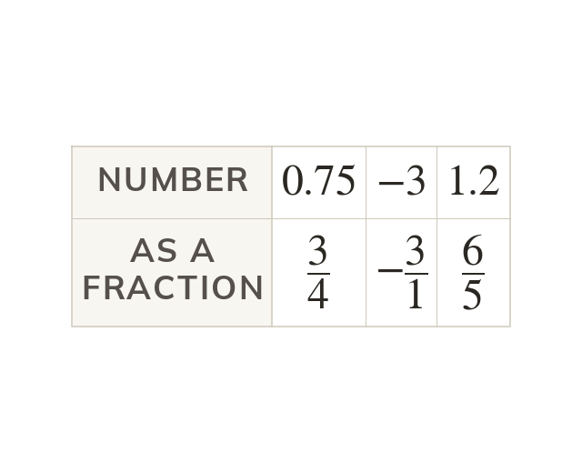
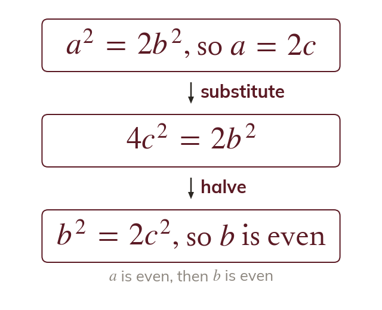
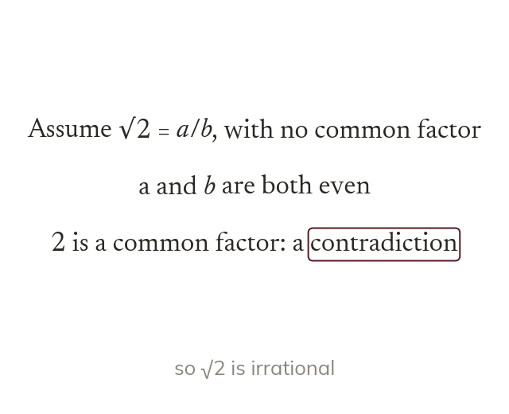
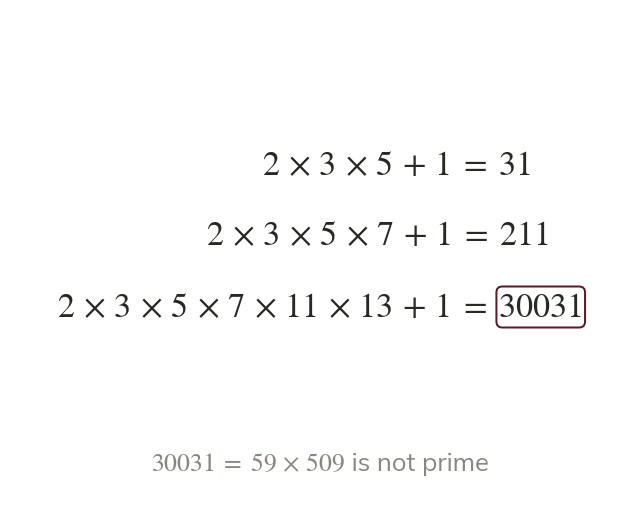
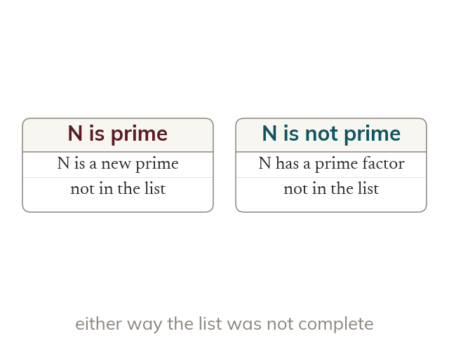
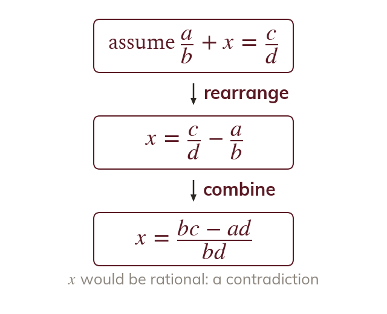

Rational means a fraction of integers
A rational number can be written as a/b, where a and are integers and
Cancelled fully, a and have no common factor.
The proofs that is irrational and that there are infinitely many primes are named in the specification and come up in exams. Both use the last lesson's method, and the same ideas carry into unfamiliar proofs about rational and irrational numbers.
Work down the page at your own pace. Write every answer in your book first, then click to check it.
Read each card, then follow the worked examples one step at a time.

A rational number can be written as a/b, where a and are integers and
Cancelled fully, a and have no common factor.

If then is even, so a is even and Then so and is even too.

a and b are both even, so they share the factor
That contradicts a/b having no common factor.
Pick an answer. If it's wrong, the feedback tells you which mistake it was.
Write the blanks in your book first, then tap each one to check.
Read each card, then follow the worked examples one step at a time.

Assume the primes are only ..., Multiply them all and add to make N.

Dividing N by any prime in the list leaves a remainder of
So N is prime, or it has a prime factor that is not in the list.

The same method proves facts about rational and irrational numbers. Assume the opposite, write each rational number as a fraction, and rearrange.

Pick an answer. If it's wrong, the feedback tells you which mistake it was.
Write the blanks in your book first, then tap each one to check.
Finished? Next lesson: P2-1.2 Algebraic Fractions.
For each skill, tap the one that is true for you today. Your Revise pages start with anything you mark Not yet.
Your ratings are saved on this device only.
Log in, then search for a code to practise that skill.